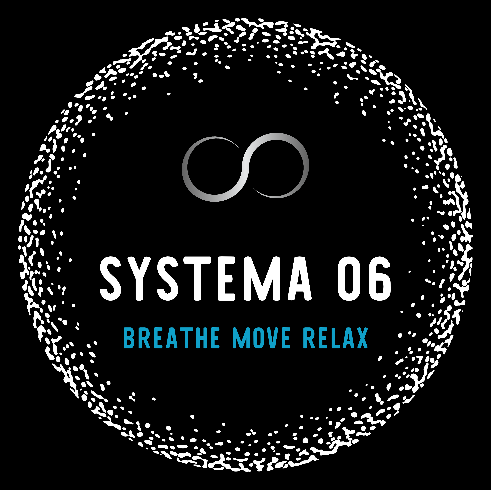
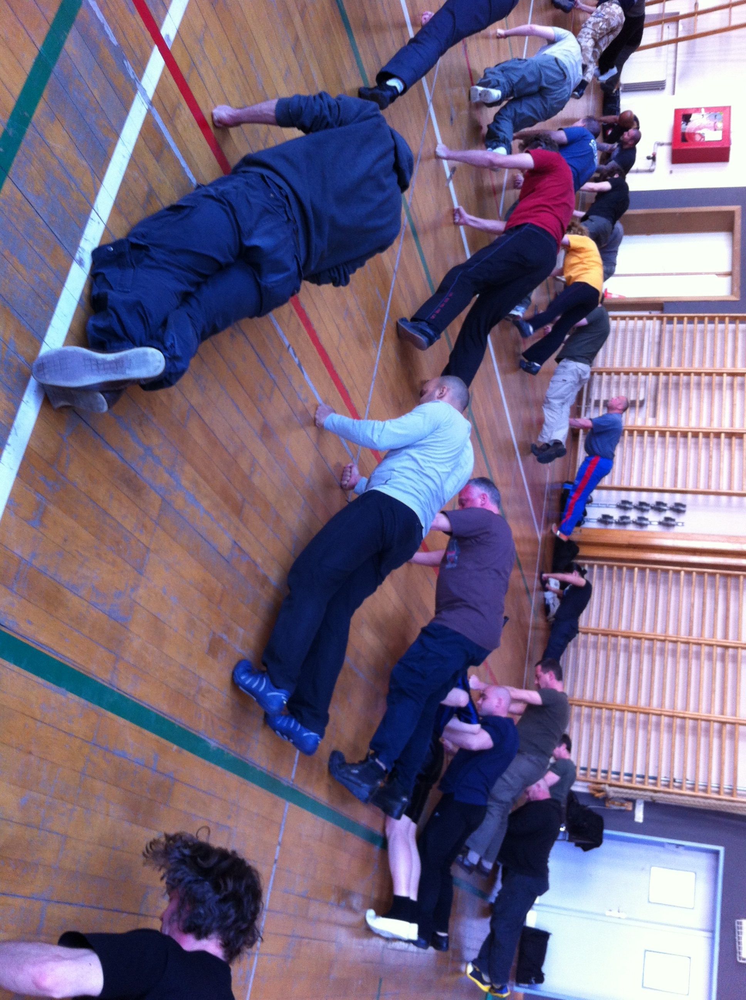
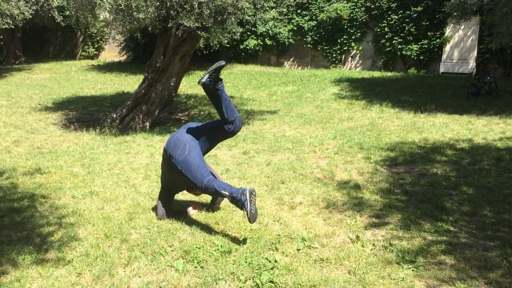
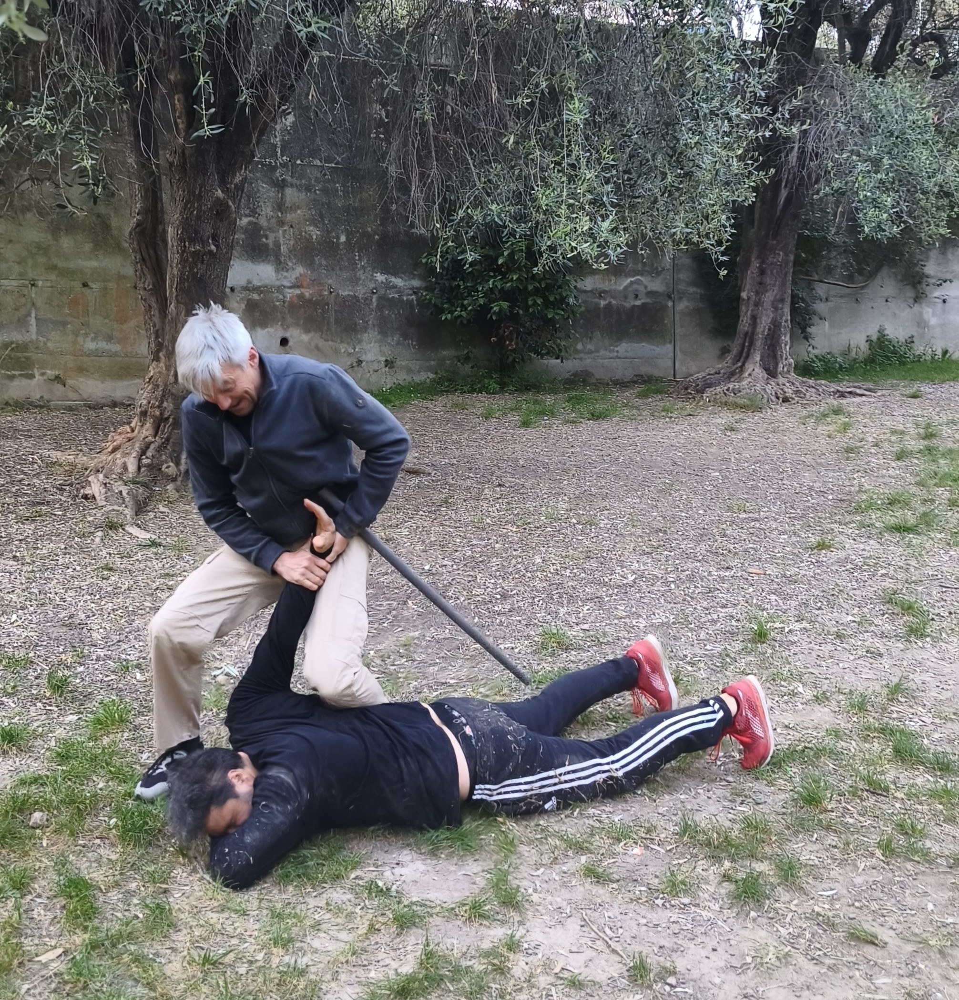
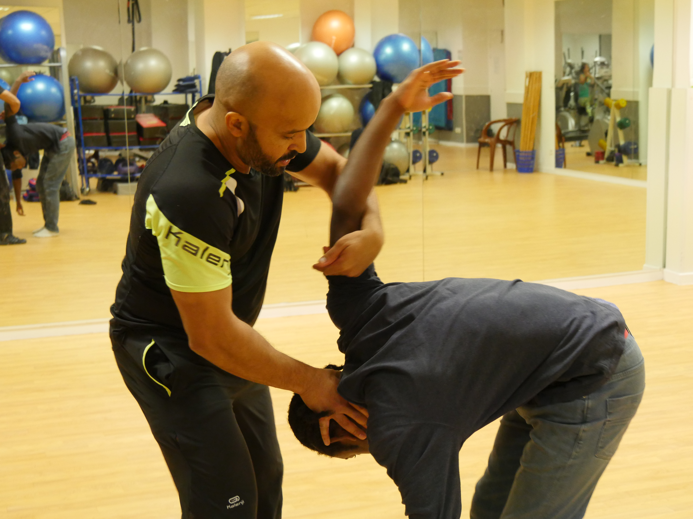
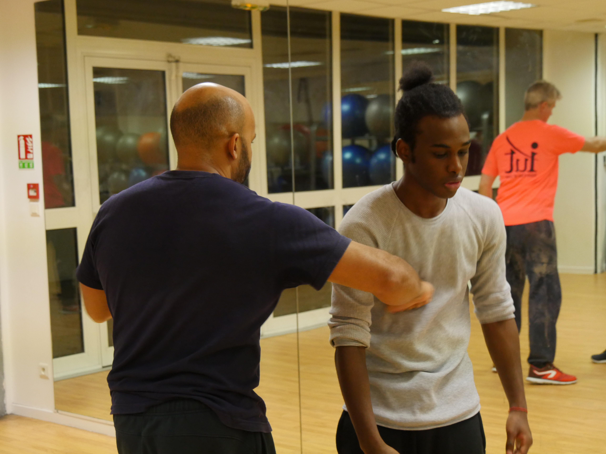

La relaxation
Permet d’éliminer les tensions qui parasitent le mouvement et consomment inutilement de l’énergie. Elle aide à maintenir l’équilibre psychologique sous stress.
Système d'auto-défense · Art du mouvement · Préservation de la santé · Gestion du stress.
Découvrez le Systema, une pratique permettant d’apprendre à se défendre tout en préservant sa santé physique et mentale sur le long terme.
Découvrir le Systema
Le Systema est une discipline russe de préservation de l’intégrité physique et psychologique de l’individu. On y apprend à faire face à toutes sortes d’agressions par un travail sur quatre axes: la relaxation, la respiration, le mouvement, la structure ou la posture.
À la croisée des chemins entre art martial, self-défense, et techniques de santé, le Systema permet de développer la maîtrise de son corps et de ses réactions en situation de survie.
Le pratiquant apprend à s’adapter à différentes situations en mettant en œuvre des principes plutôt qu'en appliquant des techniques codifiées ou des réponses préparées à l’avance. Les “techniques” doivent pouvoir fonctionner avec peu de force et être applicables même si l'on est fatigué, non préparé ou non échauffé.

Vouloir devenir plus fort en abîmant son corps et en déséquilibrant son esprit peut être satisfaisant à court terme mais cela finit par se payer les années passant.
Le Systema propose une approche non agressive de la gestion des conflits. On n’y cherche pas à détruire, mais à faire face avec calme et détermination, en utilisant les moyens strictement nécessaires.

La pratique doit permettre de préserver et de renforcer le corps sur le long terme, en travaillant la mobilité, le renforcement global des tendons et des muscles, et la gestion des tensions.
Le Systema n’est pas un sport de combat, bien qu’il puisse en être un très bon complément. Son objectif n'est pas de dominer un adversaire ou de marquer des points mais de survivre aux agressions de toutes sortes, à commencer par le stress que nous impose la vie moderne.

Nous pratiquons essentiellement deux écoles : l’école de Mikhail Ryabko et Vladimir Vasiliev, et celle du colonel Alexander Maksimtsov.
L’école Ryabko/Vasiliev propose une approche plus intuitive et immersive de la pratique : l’élève apprend en faisant et redécouvre les principes par lui-même. L’accent est mis sur la créativité et la spontanéité.
L’école Maksimtsov, quant à elle, est plus didactique et cadrée : on y apprend d’abord les principes, puis comment les appliquer, et il existe des techniques bien codifiées.
Les deux approches ont des principes communs et sont complémentaires, raison pour laquelle nous avons choisi de pratiquer les deux au sein de Systema 06.
Les principes fondamentaux
Ces quatre axes de travail sont interdépendants et forment un tout. Ils sont également facilement applicables dans la vie quotidienne.
Permet d’éliminer les tensions qui parasitent le mouvement et consomment inutilement de l’énergie. Elle aide à maintenir l’équilibre psychologique sous stress.
Apprendre à utiliser l’alignement de la structure corporelle et à mobiliser le corps dans sa globalité pour gagner en efficacité.
Améliorer la mobilité et la coordination en respectant la biomécanique du corps, permet de bouger de façon plus fluide et naturelle.
Permet de gérer la peur, la douleur, et d’éviter l’épuisement dû au stress. C’est un bon outil pour modifier rapidement son état psychologique.
Une pratique progressive et accessible
Grâce à des exercices progressifs, vous apprendrez à chuter sans vous blesser, à frapper efficacement et à apprivoiser la peur d’être frappé, à amener un adversaire au sol, à vous défendre debout, au sol, contre des armes ou contre plusieurs agresseurs.
L'objectif n'est pas d'atteindre une invincibilité illusoire mais de rendre le pratiquant plus adaptable, créatif et résilient pour augmenter ses chances de survie.





Systema 06
Les cours ont lieu à l’AnimaNice Notre-Dame, 18 rue d’Angleterre, tous les mercredis de 18 h à 20 h.